Código
library(tidyverse)
library(knitr)
source("FuncionesPCA.R")library(tidyverse)
library(knitr)
source("FuncionesPCA.R")Las funciones de FuncionesPCA.R esperan individuos en filas y variables numéricas en columnas, sin valores perdidos ni variables constantes. El PCA debe ajustarse con prcomp(), conservando x, rotation, center y scale; cuando una función pide componentes, deben existir en el ajuste. Las funciones requieren tidyverse, que se carga en el bloque anterior.
Imaginemos imágenes de dígitos escritos a mano, como las del conjunto MNIST. Si cada imagen tiene \(28 \times 28\) píxeles, cada dígito puede representarse como un punto con 784 variables. En principio, el espacio posible es enorme: cualquier combinación de intensidades de píxeles sería un punto válido.
Pero los dígitos reales no ocupan uniformemente ese espacio. La mayoría de combinaciones posibles de píxeles no parecen números. Los dígitos viven cerca de estructuras de dimensión mucho menor: formas con trazos, bucles, inclinaciones, anchuras y curvaturas. Reducir dimensión consiste en encontrar características más informativas que las variables originales.
PCA hace una versión lineal de esta idea. Construye un nuevo sistema de coordenadas que concentra la mayor cantidad posible de variabilidad en los primeros ejes. No descubre conceptos como «bucle» de forma semántica, pero sí combinaciones de píxeles que recogen patrones dominantes de variación.
Antes de trabajar con cientos de variables, podemos entender casi todo el mecanismo observando qué ocurre al proyectar una nube bidimensional sobre una recta.
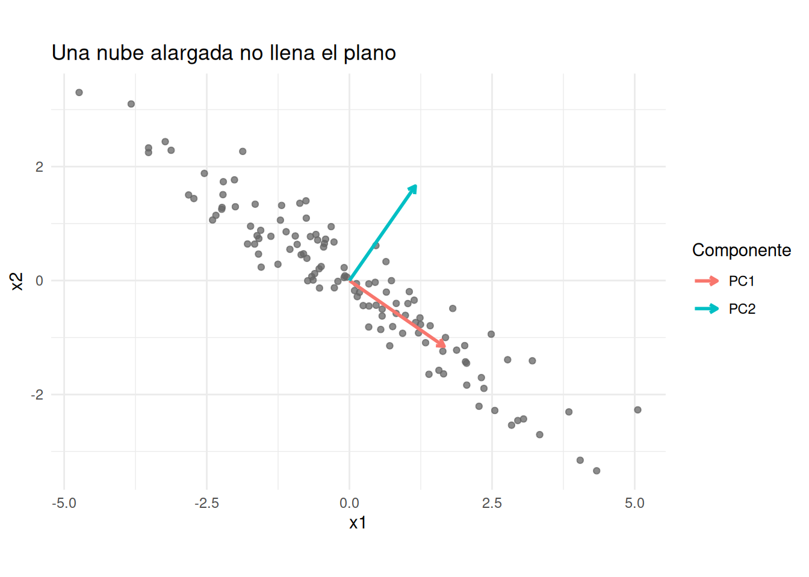
La primera componente apunta en la dirección donde la nube se extiende más. La segunda es perpendicular y recoge la variabilidad restante.
PCA conserva direcciones de alta variabilidad. Eso no garantiza que sean las más relevantes para cualquier pregunta aplicada.
Supongamos que los datos están centrados y representamos el individuo \(i\) mediante el vector columna \(x_i\). Elegimos una dirección unitaria
\[ a = \begin{pmatrix} a_1\\ \vdots\\ a_p \end{pmatrix}, \qquad a^\top a=1. \]
Su coordenada al proyectarlo sobre esa dirección es el escalar
\[ z_i=a^\top x_i. \]
Para volver al espacio original usando solo esa coordenada, reconstruimos
\[ \hat x_i=z_i a=aa^\top x_i. \]
Así, \(z_i\) indica dónde cae el individuo sobre el nuevo eje, \(\hat x_i\) es el punto proyectado y \(x_i-\hat x_i\) es la parte que se pierde.
a_pc1 <- pca_sim$rotation[, 1]
z_pc1 <- drop(X_sim %*% a_pc1)
X_proy_pc1 <- tcrossprod(z_pc1, a_pc1)
indices_muestra <- unique(round(seq(4, n, length.out = 14)))
segmentos_proyeccion <- tibble(
x1 = X_sim[indices_muestra, 1],
x2 = X_sim[indices_muestra, 2],
x1_proy = X_proy_pc1[indices_muestra, 1],
x2_proy = X_proy_pc1[indices_muestra, 2]
)
as_tibble(X_sim) |>
ggplot(aes(x1, x2)) +
geom_abline(
slope = a_pc1[2] / a_pc1[1], intercept = 0,
color = "#2c7fb8", linewidth = 0.9
) +
geom_segment(
data = segmentos_proyeccion,
aes(xend = x1_proy, yend = x2_proy),
linetype = "dashed", color = "gray45"
) +
geom_point(color = "gray55", alpha = 0.45) +
geom_point(
data = segmentos_proyeccion,
aes(x = x1_proy, y = x2_proy),
color = "#d95f0e", size = 2
) +
coord_equal() +
labs(
title = "Proyección ortogonal sobre una dirección",
subtitle = "Los puntos naranjas son las reconstrucciones sobre la recta",
x = "x1", y = "x2"
) +
theme_minimal()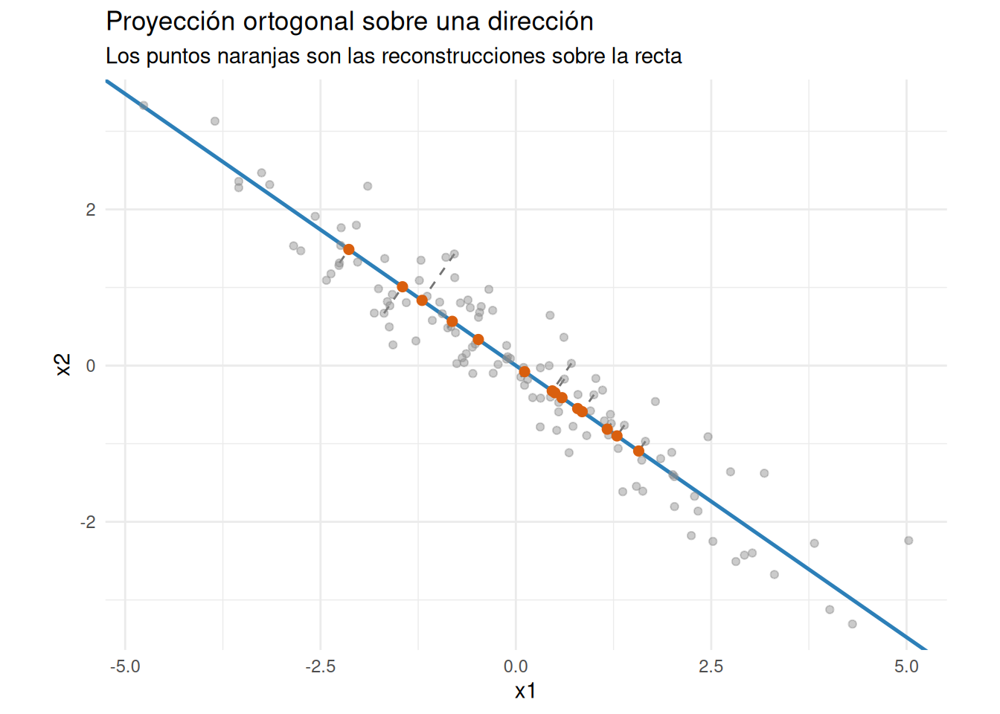
PCA no maximiza la longitud de la flecha que dibujamos, sino la dispersión de las coordenadas \(z_i\) después de proyectar los individuos. Comparemos PC1 con la dirección perpendicular, PC2.
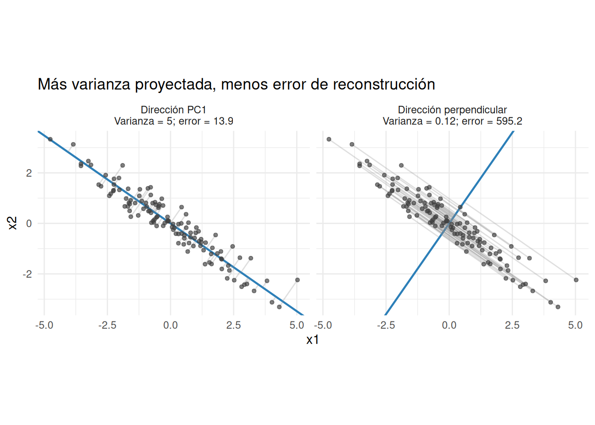
En PC1 las proyecciones quedan muy dispersas y los segmentos punto–proyección son globalmente cortos. En la dirección perpendicular ocurre lo contrario. Las distribuciones de los scores hacen visible la diferencia de dispersión.
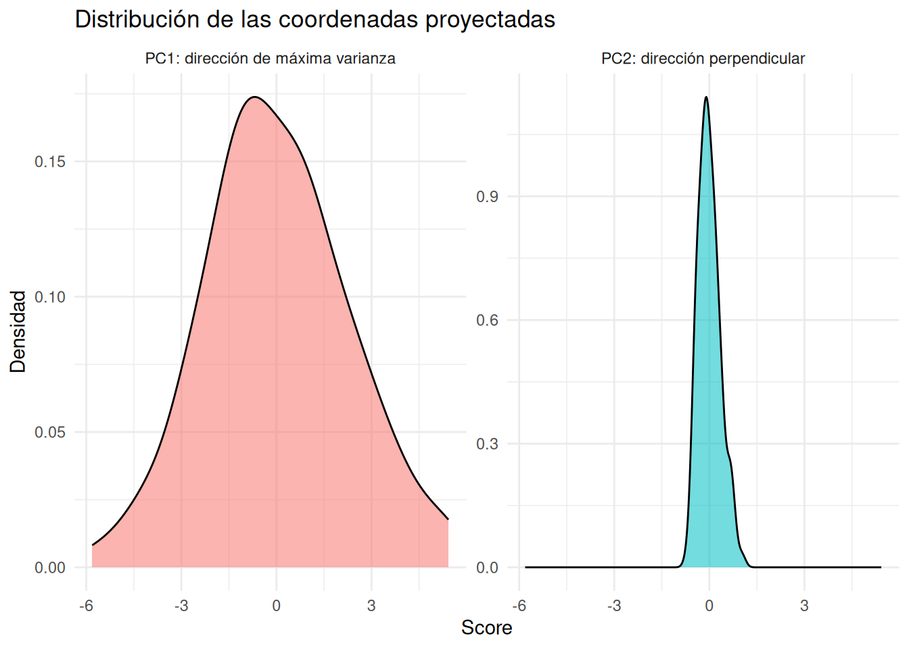
La proyección y el residuo son ortogonales. Por el teorema de Pitágoras,
\[ \|x_i\|^2=\|\hat x_i\|^2+\|x_i-\hat x_i\|^2. \]
Al sumar sobre todos los individuos,
\[ \sum_i\|x_i\|^2 = \sum_i\|\hat x_i\|^2 + \sum_i\|x_i-\hat x_i\|^2. \]
La cantidad de la izquierda es fija. Además, como \(a\) tiene norma uno, \(\|\hat x_i\|^2=z_i^2\). Por tanto, maximizar la varianza de los scores equivale a minimizar la suma de errores cuadrados de reconstrucción.
Otra forma de ver el problema es recorrer todas las direcciones del plano. Si
\[ a(\theta)= \begin{pmatrix} \cos\theta\\ \sin\theta \end{pmatrix}, \]
la función que PCA maximiza es \(V(\theta)=a(\theta)^\top Sa(\theta)\).
S_sim <- cov(X_sim)
angulos <- seq(0, pi, length.out = 361)
direcciones <- cbind(cos(angulos), sin(angulos))
varianzas_angulo <- apply(
direcciones,
1,
function(a) drop(t(a) %*% S_sim %*% a)
)
angulo_maximo <- angulos[which.max(varianzas_angulo)]
tibble(angulo = angulos, varianza = varianzas_angulo) |>
ggplot(aes(angulo, varianza)) +
geom_line(color = "#2c7fb8", linewidth = 1) +
geom_vline(xintercept = angulo_maximo, linetype = "dashed", color = "#d95f0e") +
annotate(
"point", x = angulo_maximo, y = max(varianzas_angulo),
color = "#d95f0e", size = 2.5
) +
scale_x_continuous(
breaks = c(0, pi / 4, pi / 2, 3 * pi / 4, pi),
labels = c("0", expression(pi / 4), expression(pi / 2), expression(3 * pi / 4), expression(pi))
) +
labs(
title = "Varianza de la proyección según la dirección",
subtitle = "El máximo coincide con PC1, salvo el signo arbitrario del eje",
x = expression(theta), y = "Varianza proyectada"
) +
theme_minimal()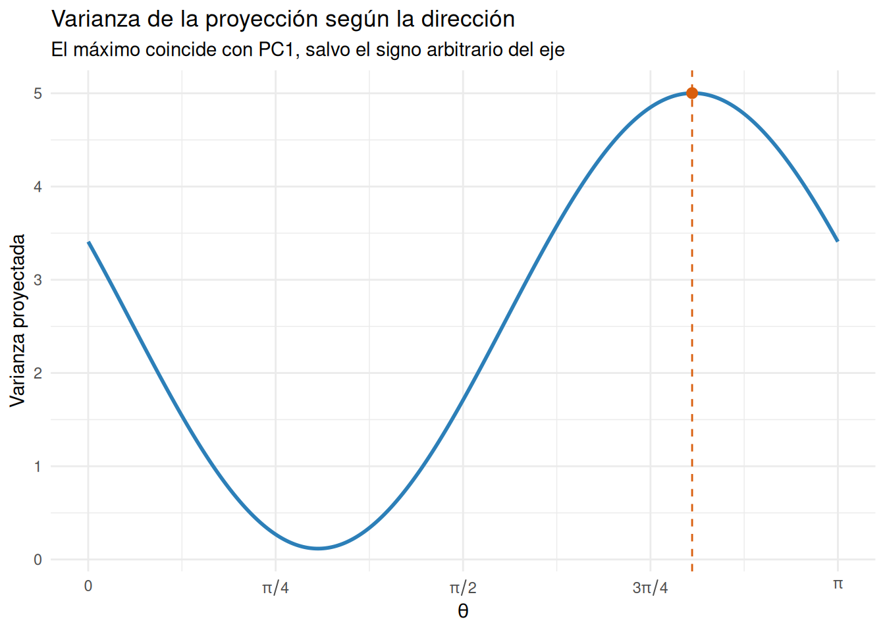
Estas tres operaciones cumplen funciones distintas.
Centrar una variable,
\[ X_j^{(c)}=X_j-\bar X_j, \]
traslada el origen al centro de la nube. No cambia las distancias entre individuos, la forma de la nube ni las correlaciones.
Estandarizar,
\[ X_j^{(e)}=\frac{X_j-\bar X_j}{s_j}, \]
también modifica la escala de cada eje. Desde el punto de vista geométrico no es una mera traslación: altera las distancias y qué direcciones se consideran más variables. Por eso puede cambiar las componentes principales.
Cambiar de base es lo que hace PCA una vez elegida la geometría de trabajo: construye ejes ortogonales nuevos. En resumen,
\[ \text{centrar}\neq\text{escalar}\neq\text{cambiar de base}. \]
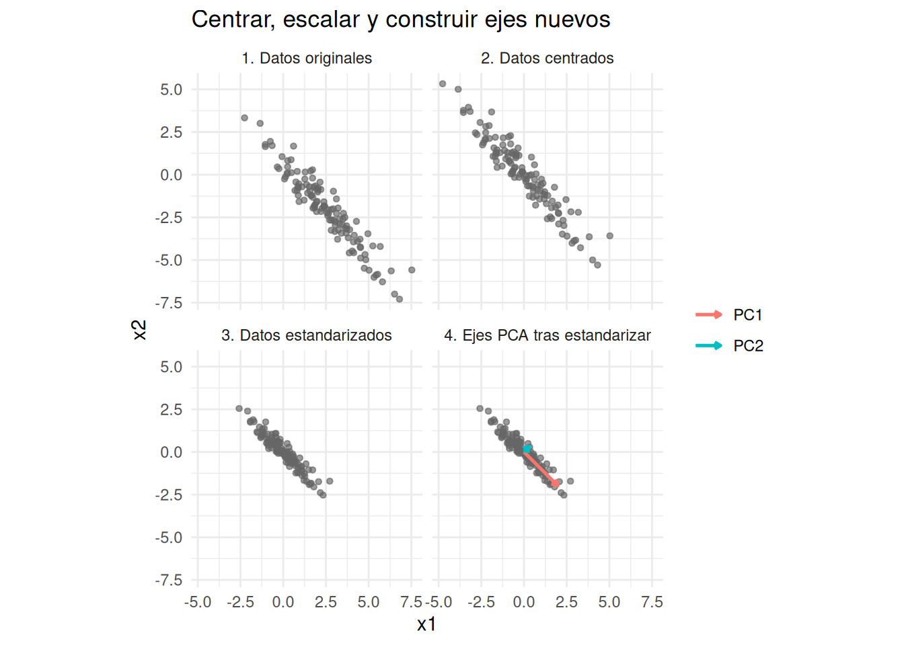
PCA no analiza los datos de forma neutral. Analiza las distancias y covarianzas que resultan de las decisiones tomadas antes del ajuste. Por eso conviene separar estas preguntas:
| Decisión | Pregunta que debe responderse |
|---|---|
| Individuos | ¿Qué representa cada fila y qué población queremos describir? |
| Variables activas | ¿Qué variables deben determinar los ejes y las distancias? |
| Variables suplementarias | ¿Qué variables queremos interpretar sin permitir que construyan los ejes? |
| Transformaciones | ¿Importan las diferencias absolutas o, por ejemplo, los cambios relativos que recogería un logaritmo? |
| Escalado | ¿Una unidad de variabilidad debe tener el mismo peso en todas las variables? |
| Redundancia | ¿Un mismo aspecto está representado varias veces y recibirá más peso de forma implícita? |
| Atípicos | ¿Hay pocos individuos extremos capaces de orientar las primeras componentes? |
Dos variables casi duplicadas no aportan dos ideas independientes: hacen que esa dirección tenga más peso. Del mismo modo, estandarizar evita que una unidad grande domine por su escala, pero también concede el mismo peso inicial a todas las variables, incluidas las poco fiables.
Seleccionar variables, transformar y escalar son decisiones sustantivas. Deben tomarse antes de mirar qué versión produce el gráfico más atractivo.
Sea \(X\) la matriz de datos centrada, con los individuos en las filas, y
\[ S=\frac{1}{n-1}X^\top X \]
su matriz de covarianzas. Para una dirección unitaria \(a\), los scores son \(Xa\) y su varianza es
\[ \operatorname{Var}(Xa)=a^\top Sa. \]
La primera componente resuelve
\[ \max_a a^\top Sa \qquad\text{sujeto a}\qquad a^\top a=1. \]
La restricción impide aumentar artificialmente la varianza multiplicando los coeficientes por una constante.
Usamos el multiplicador de Lagrange
\[ \mathcal L(a,\lambda) =a^\top Sa-\lambda(a^\top a-1). \]
Al derivar respecto de \(a\),
\[ \nabla_a\mathcal L=2Sa-2\lambda a=0, \]
y, por tanto,
\[ \boxed{Sa=\lambda a}. \]
Las direcciones candidatas son los autovectores de \(S\). Si multiplicamos por \(a^\top\) y usamos \(a^\top a=1\),
\[ a^\top Sa=\lambda a^\top a=\lambda. \]
Así,
\[ \boxed{\operatorname{Var}(PC_k)=\lambda_k}. \]
El autovector determina la dirección y su autovalor mide la varianza capturada. PC1 usa el autovector asociado al mayor autovalor.
La segunda componente resuelve el mismo problema añadiendo ortogonalidad respecto de la primera:
\[ \max_a a^\top Sa \quad\text{sujeto a}\quad a^\top a=1, \qquad a^\top a_1=0. \]
El resultado es el autovector del segundo mayor autovalor, y así sucesivamente. Si reunimos los autovectores como columnas de \(A\),
\[ S=A\Lambda A^\top, \qquad A^\top A=I, \]
y definimos los scores \(Z=XA\), entonces
\[ \operatorname{Cov}(Z)=A^\top SA=\Lambda. \]
Esta igualdad resume tres hechos: las componentes están incorreladas, la varianza de PC\(_k\) es \(\lambda_k\) y la covarianza queda diagonal en el nuevo sistema.
Cuando hay autovalores iguales, las direcciones individuales dentro de su subespacio pueden no ser únicas. El subespacio representado sí es el mismo.
La varianza total es la suma de las varianzas originales:
\[ \operatorname{tr}(S)=\lambda_1+\cdots+\lambda_p. \]
PCA no crea varianza: la redistribuye entre ejes nuevos, ordenados de mayor a menor. La proporción explicada por PC\(_k\) es
\[ \frac{\lambda_k}{\sum_{m=1}^p\lambda_m}. \]
prcomp()El PCA también puede obtenerse sin formar explícitamente \(S\). Para una matriz centrada,
\[ X=UDV^\top. \]
Entonces,
\[ S=\frac{1}{n-1}X^\top X =V\frac{D^2}{n-1}V^\top. \]
Por tanto,
\[ A=V, \qquad \lambda_k=\frac{d_k^2}{n-1}, \qquad Z=XV=UD. \]
prcomp() usa esta descomposición SVD, que suele ser numéricamente preferible a calcular eigen(cov(X)).
Para datos centrados,
\[ \operatorname{rank}(X)\leq\min(n-1,p). \]
En particular, si \(p>n\), puede haber como máximo \(n-1\) componentes con varianza positiva.
mtcarsUsaremos seis variables numéricas para conectar las fórmulas con un ejemplo pequeño. Como tienen unidades y dispersiones diferentes, el análisis principal se realiza sobre variables estandarizadas.
X <- mtcars |>
select(mpg, disp, hp, drat, wt, qsec)
Xsc <- scale(X)
S <- cov(Xsc)
eig <- eigen(S)
pca_mtcars <- prcomp(X, center = TRUE, scale. = TRUE)
kable(summary(pca_mtcars)$importance, digits = 3)| PC1 | PC2 | PC3 | PC4 | PC5 | PC6 | |
|---|---|---|---|---|---|---|
| Standard deviation | 2.046 | 1.071 | 0.577 | 0.393 | 0.353 | 0.228 |
| Proportion of Variance | 0.698 | 0.191 | 0.056 | 0.026 | 0.021 | 0.009 |
| Cumulative Proportion | 0.698 | 0.889 | 0.945 | 0.971 | 0.991 | 1.000 |
kable(round(pca_mtcars$rotation, 3), caption = "Coeficientes de las componentes")| PC1 | PC2 | PC3 | PC4 | PC5 | PC6 | |
|---|---|---|---|---|---|---|
| mpg | -0.459 | -0.059 | 0.195 | -0.782 | 0.111 | -0.352 |
| disp | 0.466 | 0.061 | -0.097 | -0.600 | -0.295 | 0.568 |
| hp | 0.426 | -0.361 | -0.146 | -0.123 | 0.806 | -0.048 |
| drat | -0.367 | -0.437 | -0.800 | -0.023 | -0.144 | 0.113 |
| wt | 0.439 | 0.300 | -0.418 | -0.104 | -0.230 | -0.692 |
| qsec | -0.253 | 0.763 | -0.341 | -0.043 | 0.422 | 0.242 |
Los elementos principales del resultado son:
rotation: autovectores o coeficientes usados para construir las componentes;x: scores, es decir, coordenadas de los individuos;sdev: desviaciones típicas de las componentes;sdev^2: autovalores o varianzas de las componentes.tibble(
componente = colnames(pca_mtcars$x),
`Varianza de los scores` = apply(pca_mtcars$x, 2, var),
Autovalor = pca_mtcars$sdev^2
) |>
mutate(across(where(is.numeric), ~ round(.x, 4))) |>
kable(caption = "El autovalor es la varianza de la componente")| componente | Varianza de los scores | Autovalor |
|---|---|---|
| PC1 | 4.1874 | 4.1874 |
| PC2 | 1.1481 | 1.1481 |
| PC3 | 0.3334 | 0.3334 |
| PC4 | 0.1544 | 0.1544 |
| PC5 | 0.1248 | 0.1248 |
| PC6 | 0.0520 | 0.0520 |
Si \(A\) es la matriz de autovectores, los scores son
\[ Z=XA. \]
Los coeficientes \(a_{jk}\) indican cómo entra la variable \(X_j\) en la combinación lineal
\[ PC_k=a_{1k}X_1+\cdots+a_{pk}X_p. \]
En cambio, los scores indican dónde queda cada individuo en los ejes nuevos.
scores <- as_tibble(pca_mtcars$x, rownames = "coche")
scores |>
select(coche, PC1, PC2) |>
slice_head(n = 6) |>
mutate(across(c(PC1, PC2), ~ round(.x, 2))) |>
kable(caption = "Primeros scores")| coche | PC1 | PC2 |
|---|---|---|
| Mazda RX4 | -0.84 | -0.87 |
| Mazda RX4 Wag | -0.81 | -0.56 |
| Datsun 710 | -1.69 | 0.04 |
| Hornet 4 Drive | -0.10 | 1.29 |
| Hornet Sportabout | 1.29 | 0.01 |
| Valiant | 0.22 | 2.01 |
visualizar_individuos_pca(
pca_mtcars,
componentes = c(1, 2),
grupo = factor(mtcars$am, labels = c("automático", "manual")),
id = rownames(mtcars)
) +
labs(color = "Transmisión")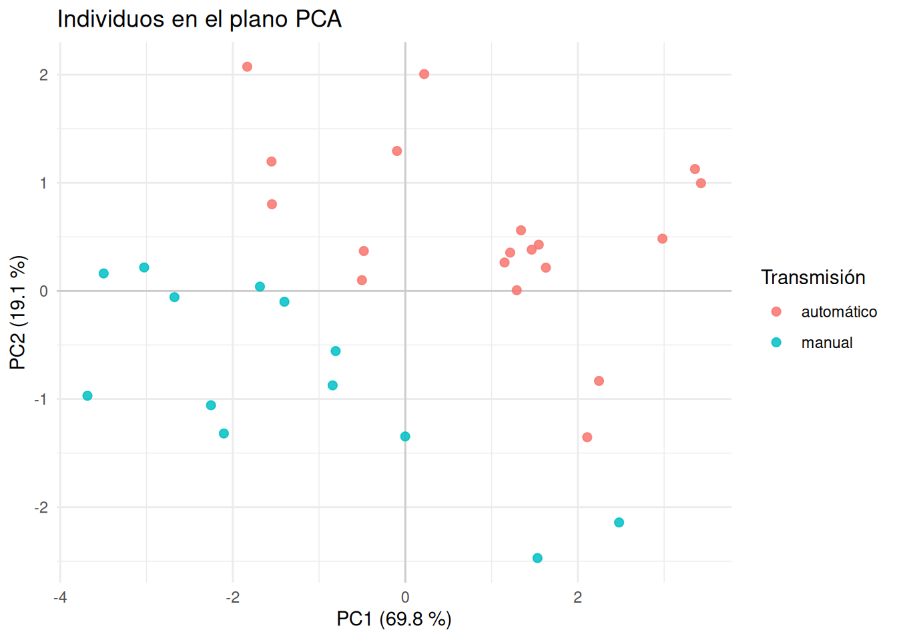
Puntos cercanos tienen perfiles parecidos en las variables activas, con una cautela: si PC1–PC2 explica poca varianza, las proximidades de ese plano pueden ser engañosas.
El signo de una componente es arbitrario. Si \(a_k\) es una solución, \(-a_k\) también lo es; los scores cambian simultáneamente de \(Xa_k\) a \(-Xa_k\), sin alterar distancias, varianzas ni interpretación relativa. Por eso no conviene comparar signos entre programas sin tener en cuenta esta ambigüedad.
El coeficiente de una variable y su correlación con una componente son cantidades distintas. En un PCA estandarizado, las coordenadas de las variables son
\[ \operatorname{Cor}(X_j,PC_k) =a_{jk}\sqrt{\lambda_k}. \]
Como pca_mtcars$sdev[k] es \(\sqrt{\lambda_k}\), calculamos todas las coordenadas mediante:
coord_var <- sweep(
pca_mtcars$rotation,
2,
pca_mtcars$sdev,
"*"
)
coord_var_check <- cor(Xsc, pca_mtcars$x)
stopifnot(isTRUE(all.equal(unname(coord_var), unname(coord_var_check))))
resumen_variables <- resumir_variables_pca(
pca_mtcars,
X,
componentes = seq_len(ncol(X))
)
coord_var_12 <- resumen_variables |>
filter(componente %in% c("PC1", "PC2")) |>
select(variable, componente, correlacion) |>
pivot_wider(names_from = componente, values_from = correlacion)En distintos libros y paquetes, loading puede referirse a convenciones diferentes. Aquí distinguimos coeficientes de la componente (rotation) y coordenadas de las variables (correlaciones variable–componente).
circulo_correlaciones_pca(pca_mtcars, X, componentes = c(1, 2))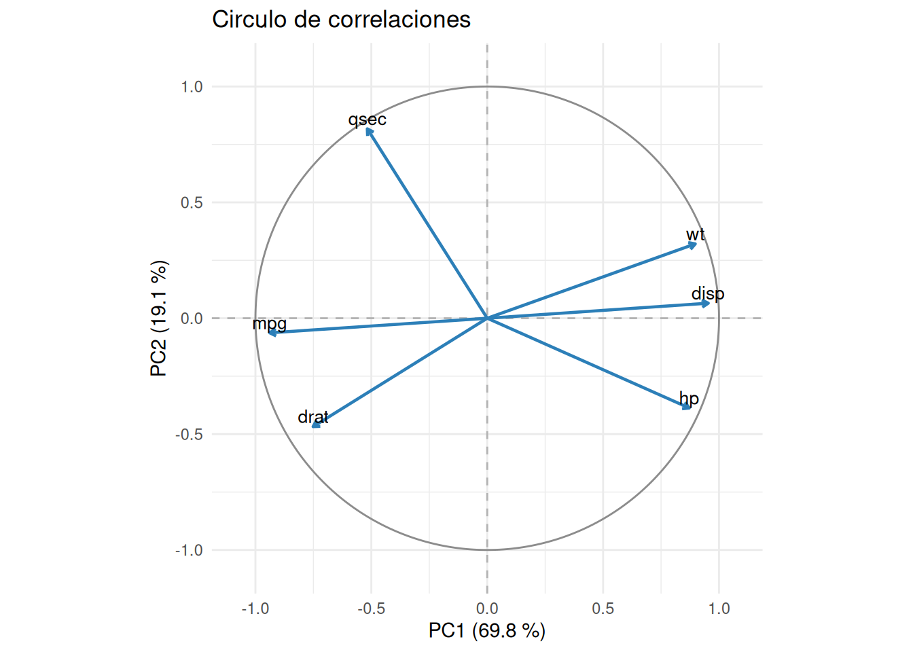
Flechas próximas sugieren correlación positiva; flechas opuestas, correlación negativa; flechas aproximadamente perpendiculares, asociación lineal débil. Una longitud próxima a uno indica buena representación en PC1–PC2. La lectura angular es aproximada porque solo mostramos dos componentes.
Estas medidas responden a preguntas diferentes.
| Cantidad | Fórmula en PCA estandarizado | Pregunta |
|---|---|---|
| Coeficiente | \(a_{jk}\) | ¿Cómo entra \(X_j\) en PC\(_k\)? |
| Coordenada | \(\sqrt{\lambda_k}a_{jk}\) | ¿Qué correlación tiene \(X_j\) con PC\(_k\)? |
| Cos² | \(\lambda_k a_{jk}^2\) | ¿Qué bien representa PC\(_k\) a \(X_j\)? |
| Contribución | \(a_{jk}^2\) | ¿Cuánto participa \(X_j\) en la construcción de PC\(_k\)? |
Para una variable estandarizada,
\[ \cos^2_{jk}=\operatorname{Cor}(X_j,PC_k)^2 =\lambda_k a_{jk}^2. \]
Por eso no se obtiene elevando directamente rotation al cuadrado. La calidad en el plano PC1–PC2 es
\[ \cos^2_j(PC1,PC2) =\operatorname{Cor}(X_j,PC_1)^2 +\operatorname{Cor}(X_j,PC_2)^2. \]
Un valor próximo a uno significa que casi toda la variabilidad de la variable es visible en el plano.
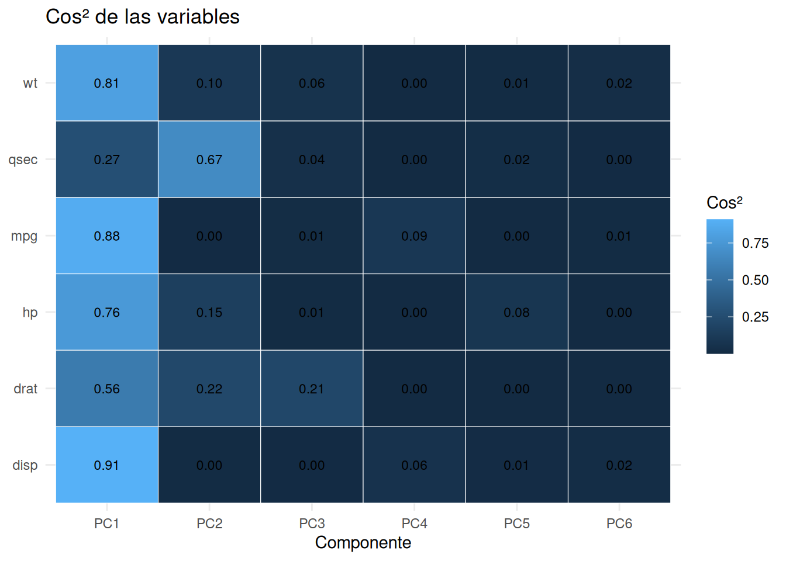
cos2_var_plano <- resumen_variables |>
filter(componente %in% c("PC1", "PC2")) |>
group_by(variable) |>
summarise(cos2_plano = sum(cos2), .groups = "drop")
cos2_var_plano |>
ggplot(aes(cos2_plano, reorder(variable, cos2_plano))) +
geom_col(fill = "#2c7fb8", alpha = 0.85) +
scale_x_continuous(limits = c(0, 1)) +
labs(
title = "Calidad de representación en el plano PC1-PC2",
x = "Cos² en el plano", y = NULL
) +
theme_minimal()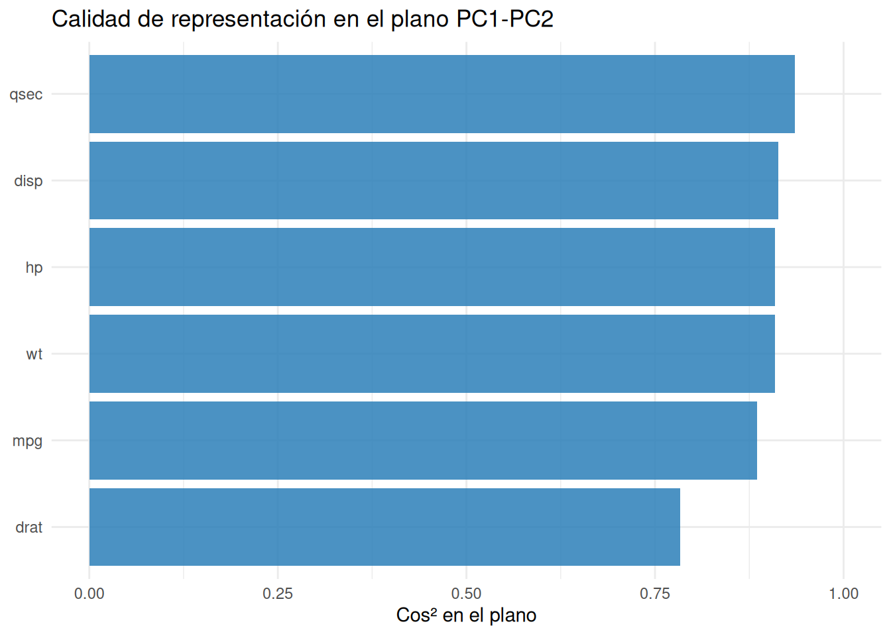
La contribución relativa de \(X_j\) a PC\(_k\) es
\[ \operatorname{ctr}_{jk} =\frac{\operatorname{Cor}(X_j,PC_k)^2}{\lambda_k} =a_{jk}^2. \]
En porcentaje es \(100a_{jk}^2\). Como cada autovector tiene norma uno, las contribuciones a una componente suman 100%.
stopifnot(all(
abs(
resumen_variables |>
group_by(componente) |>
summarise(total = sum(contribucion)) |>
pull(total) - 100
) < 1e-10
))
resumen_variables |>
filter(componente %in% c("PC1", "PC2")) |>
group_by(componente) |>
arrange(desc(contribucion), .by_group = TRUE) |>
ungroup() |>
mutate(contribucion = round(contribucion, 1)) |>
kable(caption = "Contribución de las variables a PC1 y PC2 (%)")| variable | componente | coeficiente | correlacion | cos2 | contribucion |
|---|---|---|---|---|---|
| disp | PC1 | 0.4660354 | 0.9536542 | 0.9094563 | 21.7 |
| mpg | PC1 | -0.4586835 | -0.9386100 | 0.8809887 | 21.0 |
| wt | PC1 | 0.4386179 | 0.8975495 | 0.8055951 | 19.2 |
| hp | PC1 | 0.4258534 | 0.8714293 | 0.7593890 | 18.1 |
| drat | PC1 | -0.3670963 | -0.7511939 | 0.5642922 | 13.5 |
| qsec | PC1 | -0.2528320 | -0.5173734 | 0.2676752 | 6.4 |
| qsec | PC2 | 0.7628488 | 0.8173924 | 0.6681304 | 58.2 |
| drat | PC2 | -0.4365254 | -0.4677369 | 0.2187778 | 19.1 |
| hp | PC2 | -0.3614758 | -0.3873213 | 0.1500178 | 13.1 |
| wt | PC2 | 0.2995346 | 0.3209513 | 0.1030097 | 9.0 |
| disp | PC2 | 0.0606530 | 0.0649896 | 0.0042237 | 0.4 |
| mpg | PC2 | -0.0586761 | -0.0628714 | 0.0039528 | 0.3 |
El cos² pregunta si una variable queda bien representada; la contribución pregunta cuánto ayudó a construir el eje. Una variable puede contribuir mucho a una componente sin que el plano completo represente bien toda su variabilidad.
Una componente se interpreta como un contraste entre perfiles, no como una variable observada ni como una causa. Conviene seguir este orden:
En mtcars, el extremo positivo de PC1 reúne mayor cilindrada, potencia y peso, mientras que el extremo negativo se asocia con mayor rendimiento en millas por galón. Podemos describirlo como un contraste entre tamaño-potencia y eficiencia, pero no concluir que PC1 sea una magnitud física real ni establecer relaciones causales. Invertir el signo del eje intercambiaría los extremos sin cambiar esta interpretación.
Para el individuo \(i\), con scores \(z_{ik}\),
\[ d_i^2=\sum_{k=1}^p z_{ik}^2, \qquad \cos^2_{ik}=\frac{z_{ik}^2}{d_i^2}. \]
En PC1–PC2,
\[ \cos^2_i(PC1,PC2) =\frac{z_{i1}^2+z_{i2}^2}{\sum_{k=1}^p z_{ik}^2}. \]
Mide qué proporción de la distancia del individuo al centro queda visible en el plano.
calidad_individuos <- resumir_individuos_pca(
pca_mtcars,
componentes = c(1, 2),
id = rownames(mtcars)
)
visualizar_individuos_pca(
pca_mtcars,
componentes = c(1, 2),
grupo = factor(mtcars$am, labels = c("automático", "manual")),
id = rownames(mtcars),
mostrar_cos2 = TRUE
) +
labs(
title = "Calidad de representación de los individuos",
subtitle = "El tamaño representa el cos² en PC1-PC2",
color = "Transmisión"
)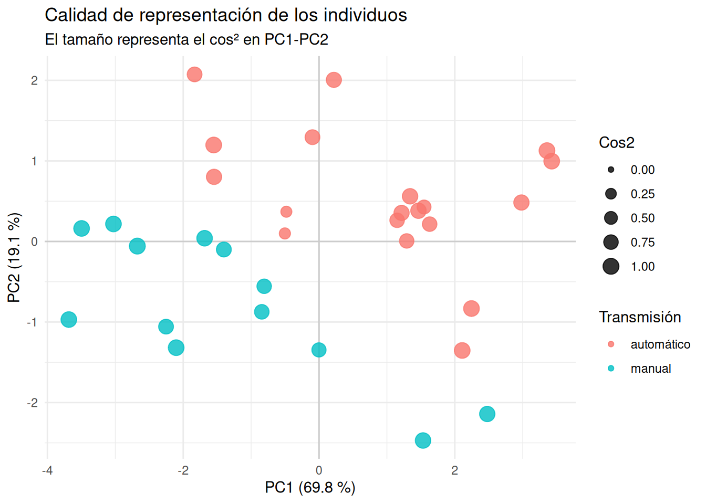
Para ver por qué cambia la calidad, comparamos automáticamente el individuo mejor representado con el peor representado en el plano.
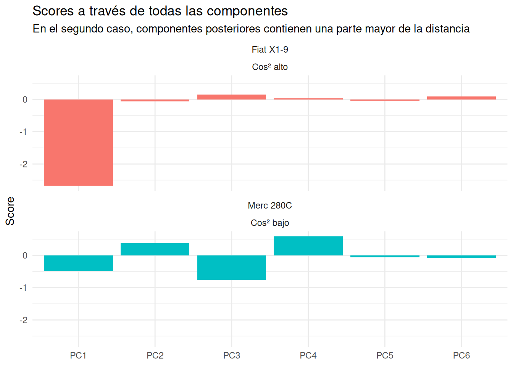
Un mapa de individuos representa scores; un círculo de correlaciones representa correlaciones variable–componente. Un biplot los superpone, pero ambos objetos no están necesariamente en la misma escala numérica y la interpretación depende de la convención usada.
En el siguiente biplot exploratorio conservamos las direcciones del círculo de correlaciones y multiplicamos todas las flechas por un único factor para hacerlas visibles sobre el mapa de scores. Su longitud solo es interpretable de forma relativa; para leer correlaciones deben usarse las coordenadas del círculo anterior.
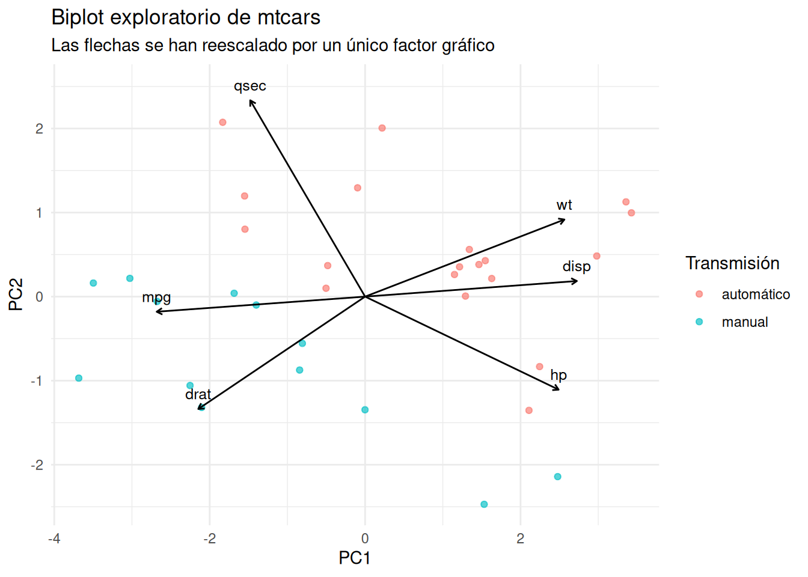
Las variables activas construyen el PCA. Una variable suplementaria se relaciona con las componentes después del ajuste, pero no modifica los ejes. Esta distinción es útil para no permitir que una etiqueta externa determine la representación que después queremos evaluar.
Por ejemplo, cyl y gear no participaron en el PCA anterior. Al correlacionarlas con los scores podemos estudiar su relación con las componentes sin recalcular el análisis:
suplementarias <- mtcars |>
select(cyl, gear)
resumir_variables_suplementarias_pca(
pca_mtcars,
suplementarias,
componentes = c(1, 2)
) |>
mutate(across(c(correlacion, cos2), ~ round(.x, 3))) |>
kable(caption = "Variables suplementarias y componentes")| variable | componente | correlacion | cos2 |
|---|---|---|---|
| cyl | PC1 | 0.936 | 0.876 |
| cyl | PC2 | -0.100 | 0.010 |
| gear | PC1 | -0.485 | 0.235 |
| gear | PC2 | -0.615 | 0.378 |
Una variable cuantitativa suplementaria se interpreta mediante
\[ \operatorname{Cor}(Y,PC_k). \]
Si la variable es nominal, como am, no tiene sentido calcular esa correlación como si sus códigos fueran cantidades. Podemos colorear los individuos, comparar grupos o sus centroides, siempre dejando claro que la variable no construyó los ejes.
Un individuo suplementario se proyecta sobre unos ejes ya estimados. Para un PCA estandarizado,
\[ z_{\text{nuevo}} = \left(\frac{x_{\text{nuevo}}-\bar x}{s}\right)A. \]
predict() aplica el centro, la escala y la rotación guardados en el ajuste. En el ejemplo siguiente, Toyota Corolla no se utiliza para construir el PCA y se proyecta después:
es_nuevo <- rownames(X) == "Toyota Corolla"
pca_referencia <- prcomp(
X[!es_nuevo, ],
center = TRUE,
scale. = TRUE
)
predict(
pca_referencia,
newdata = X[es_nuevo, , drop = FALSE]
)[, 1:2, drop = FALSE] |>
round(3) |>
kable(caption = "Proyección de un individuo suplementario")| PC1 | PC2 | |
|---|---|---|
| Toyota Corolla | -3.725 | 0.192 |
Reajustar el PCA después de añadir el individuo ya no sería una proyección suplementaria: cambiaría el centro, la escala y potencialmente los ejes.
evaluacion_varianza <- resumir_varianza_pca(pca_mtcars)
evaluacion_varianza$grafico_scree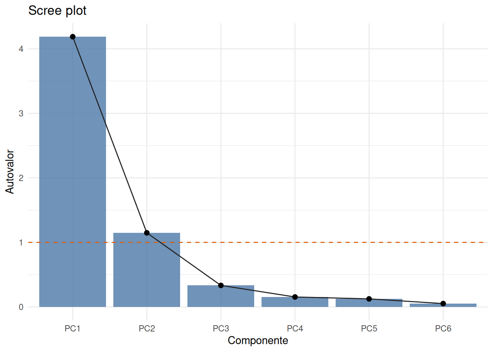
evaluacion_varianza$grafico_acumulada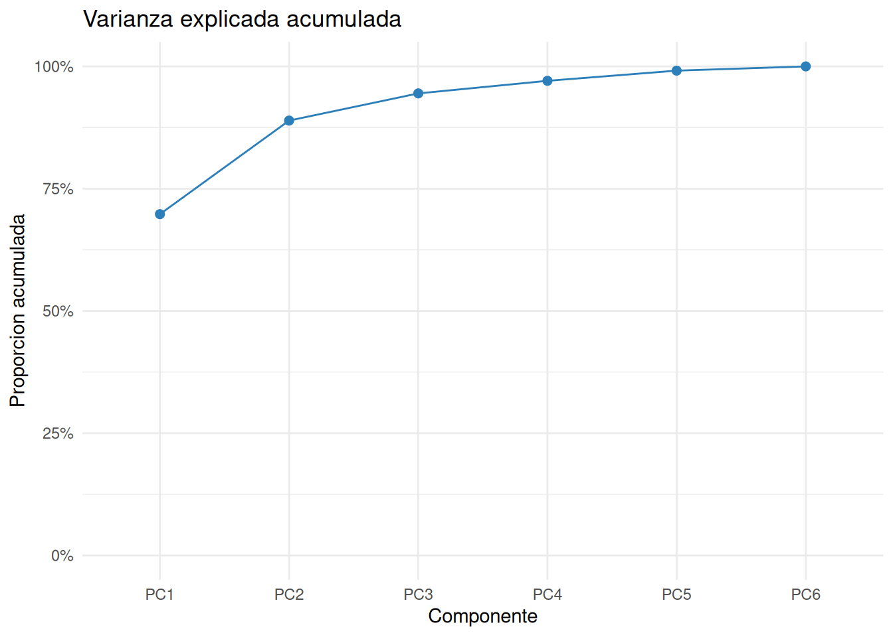
evaluacion_varianza$tabla |>
mutate(across(c(autovalor, proporcion, acumulada), ~ round(.x, 3))) |>
kable(caption = "Varianza explicada y criterio de Kaiser")| componente | autovalor | proporcion | acumulada | kaiser |
|---|---|---|---|---|
| PC1 | 4.187 | 0.698 | 0.698 | TRUE |
| PC2 | 1.148 | 0.191 | 0.889 | TRUE |
| PC3 | 0.333 | 0.056 | 0.945 | FALSE |
| PC4 | 0.154 | 0.026 | 0.971 | FALSE |
| PC5 | 0.125 | 0.021 | 0.991 | FALSE |
| PC6 | 0.052 | 0.009 | 1.000 | FALSE |
evaluacion_varianza$umbrales |>
mutate(umbral = scales::percent(umbral)) |>
kable(caption = "Componentes necesarias para alcanzar cada umbral")| umbral | componentes |
|---|---|
| 70% | 2 |
| 80% | 2 |
| 90% | 3 |
| 95% | 4 |
No existe un único número correcto de componentes con independencia del objetivo.
| Objetivo | Criterio principal |
|---|---|
| Visualización | 2–3 componentes, informando de la varianza representada |
| Resumen descriptivo | Varianza acumulada e interpretabilidad |
| Compresión | Error de reconstrucción |
| Eliminar redundancia | Autovalores pequeños y forma del scree plot |
| Preprocesamiento predictivo | Rendimiento validado del modelo posterior |
| Distinguir estructura de ruido | Criterios auxiliares como análisis paralelo |
En un PCA de la matriz de correlaciones, la regla de Kaiser conserva componentes con \(\lambda_k>1\): cada una explica más que una variable estandarizada promedio. Es una referencia, no una decisión automática.
El análisis paralelo compara los autovalores observados con los de datos aleatorios de las mismas dimensiones. Aquí usamos el percentil 95 de 500 simulaciones independientes.
paralelo <- analisis_paralelo_pca(
X,
simulaciones = 500,
percentil = 0.95,
semilla = 321
)
paralelo$grafico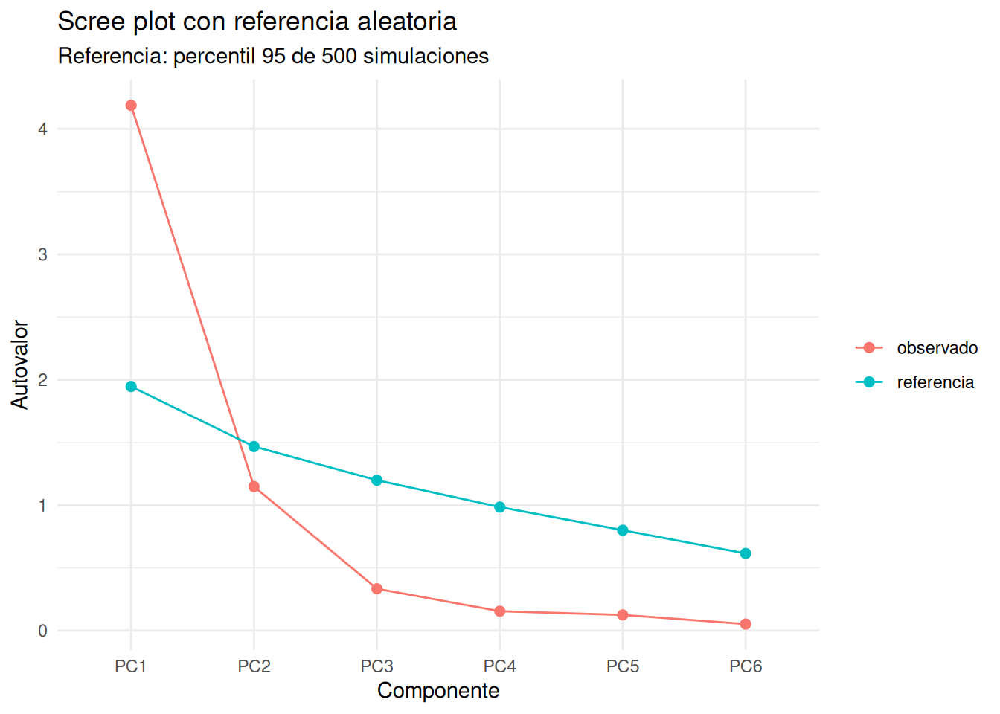
paralelo$tabla |>
mutate(across(c(observado, referencia), ~ round(.x, 3))) |>
kable(caption = "Comparación con la referencia aleatoria")| componente | observado | referencia | supera_referencia |
|---|---|---|---|
| PC1 | 4.187 | 1.946 | TRUE |
| PC2 | 1.148 | 1.468 | FALSE |
| PC3 | 0.333 | 1.199 | FALSE |
| PC4 | 0.154 | 0.985 | FALSE |
| PC5 | 0.125 | 0.800 | FALSE |
| PC6 | 0.052 | 0.615 | FALSE |
El análisis paralelo también es un criterio complementario: la decisión debe responder al uso posterior y al coste de perder información.
Explicar mucha varianza no garantiza que un eje sea estable. Una referencia sencilla es la separación entre autovalores consecutivos,
\[ g_k=\lambda_k-\lambda_{k+1}. \]
Si dos autovalores son muy parecidos, pequeñas modificaciones de la muestra pueden rotar bastante sus componentes. En ese caso puede ser más razonable interpretar el subespacio que forman conjuntamente que asignar un significado rígido a cada eje por separado.
evaluacion_varianza$tabla |>
transmute(
componente,
separacion_siguiente = round(autovalor - lead(autovalor), 3),
autovalor = round(autovalor, 3)
) |>
select(componente, autovalor, separacion_siguiente) |>
kable(caption = "Separación entre autovalores consecutivos")| componente | autovalor | separacion_siguiente |
|---|---|---|
| PC1 | 4.187 | 3.039 |
| PC2 | 1.148 | 0.815 |
| PC3 | 0.333 | 0.179 |
| PC4 | 0.154 | 0.030 |
| PC5 | 0.125 | 0.073 |
| PC6 | 0.052 | NA |
Una separación grande no demuestra estabilidad, pero una separación muy pequeña advierte contra interpretaciones demasiado precisas. Si la interpretación es importante, debe comprobarse repitiendo el análisis en muestras alternativas o mediante remuestreo. El cambio simultáneo de signo de coeficientes y scores no es inestabilidad: representa exactamente el mismo eje.
La elección entre ambas geometrías no es automática. Usar covarianzas conserva las unidades originales; estandarizar equivale a usar correlaciones y da varianza inicial uno a cada variable.
kable(round(cov(X), 2), caption = "Matriz de covarianzas")| mpg | disp | hp | drat | wt | qsec | |
|---|---|---|---|---|---|---|
| mpg | 36.32 | -633.10 | -320.73 | 2.20 | -5.12 | 4.51 |
| disp | -633.10 | 15360.80 | 6721.16 | -47.06 | 107.68 | -96.05 |
| hp | -320.73 | 6721.16 | 4700.87 | -16.45 | 44.19 | -86.77 |
| drat | 2.20 | -47.06 | -16.45 | 0.29 | -0.37 | 0.09 |
| wt | -5.12 | 107.68 | 44.19 | -0.37 | 0.96 | -0.31 |
| qsec | 4.51 | -96.05 | -86.77 | 0.09 | -0.31 | 3.19 |
kable(round(cor(X), 2), caption = "Matriz de correlaciones")| mpg | disp | hp | drat | wt | qsec | |
|---|---|---|---|---|---|---|
| mpg | 1.00 | -0.85 | -0.78 | 0.68 | -0.87 | 0.42 |
| disp | -0.85 | 1.00 | 0.79 | -0.71 | 0.89 | -0.43 |
| hp | -0.78 | 0.79 | 1.00 | -0.45 | 0.66 | -0.71 |
| drat | 0.68 | -0.71 | -0.45 | 1.00 | -0.71 | 0.09 |
| wt | -0.87 | 0.89 | 0.66 | -0.71 | 1.00 | -0.17 |
| qsec | 0.42 | -0.43 | -0.71 | 0.09 | -0.17 | 1.00 |
pca_mtcars_cov <- prcomp(X, center = TRUE, scale. = FALSE)
pca_mtcars_cor <- prcomp(X, center = TRUE, scale. = TRUE)
tibble(
componente = colnames(summary(pca_mtcars_cov)$importance),
covarianzas = round(summary(pca_mtcars_cov)$importance[2, ], 3),
correlaciones = round(summary(pca_mtcars_cor)$importance[2, ], 3)
) |>
kable(caption = "Proporción de varianza explicada")| componente | covarianzas | correlaciones |
|---|---|---|
| PC1 | 0.927 | 0.698 |
| PC2 | 0.072 | 0.191 |
| PC3 | 0.000 | 0.056 |
| PC4 | 0.000 | 0.026 |
| PC5 | 0.000 | 0.021 |
| PC6 | 0.000 | 0.009 |
Sin escalar, las variables con mayor dispersión en sus unidades originales tienen más influencia. Escalar modifica la pregunta: no es una corrección universal, sino una decisión sustantiva sobre qué diferencias deben contar.
Si retenemos \(q<p\) componentes y definimos
\[ A_q=(a_1,\ldots,a_q), \qquad Z_q=XA_q, \]
la reconstrucción en el espacio original centrado es
\[ \boxed{\hat X_q=Z_qA_q^\top=XA_qA_q^\top}. \]
La matriz \(P_q=A_qA_q^\top\) proyecta sobre el subespacio generado por las primeras \(q\) componentes. Con la convención de covarianza que divide por \(n-1\),
\[ \|X-\hat X_q\|_F^2 =(n-1)\sum_{k=q+1}^{p}\lambda_k. \]
La varianza descartada es exactamente el error cuadrático de reconstrucción. Además, entre todas las aproximaciones lineales de rango \(q\), PCA minimiza ese error.
X_aprox_2 <- reconstruir_pca(pca_mtcars, q = 2)
evaluacion_reconstruccion <- evaluar_reconstruccion_pca(
pca_mtcars,
X,
q = seq_len(ncol(X))
)
evaluacion_reconstruccion$grafico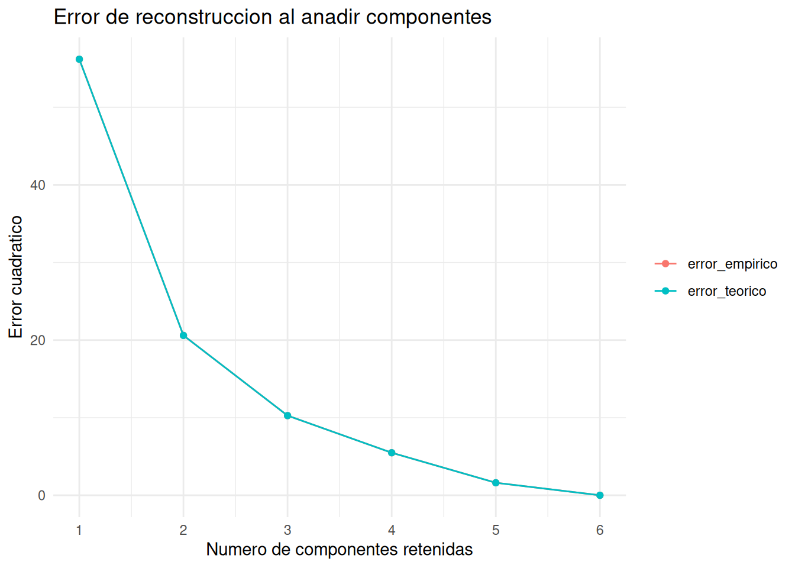
evaluacion_reconstruccion$tabla |>
mutate(across(where(is.numeric), ~ round(.x, 4))) |>
kable(caption = "Error al retener q componentes")| componentes | error_empirico | error_teorico | varianza_descartada |
|---|---|---|---|
| 1 | 56.1907 | 56.1907 | 0.3021 |
| 2 | 20.5992 | 20.5992 | 0.1107 |
| 3 | 10.2652 | 10.2652 | 0.0552 |
| 4 | 5.4800 | 5.4800 | 0.0295 |
| 5 | 1.6113 | 1.6113 | 0.0087 |
| 6 | 0.0000 | 0.0000 | 0.0000 |
stopifnot(isTRUE(all.equal(
evaluacion_reconstruccion$tabla$error_empirico,
evaluacion_reconstruccion$tabla$error_teorico
)))Retener componentes no elimina «variables poco importantes»: elimina direcciones de baja variabilidad. Elegir \(q\) equivale a aceptar un error de reconstrucción concreto.
El error total puede ocultar dónde se concentra la pérdida. Antes de aceptar dos componentes conviene mirar qué variables e individuos quedan peor reconstruidos.
diagnostico_2 <- diagnosticar_reconstruccion_pca(
pca_mtcars,
X,
q = 2,
id = rownames(mtcars)
)
diagnostico_2$variables |>
arrange(desc(error_reconstruccion)) |>
mutate(across(where(is.numeric), ~ round(.x, 3))) |>
kable(caption = "Pérdida de información por variable con dos componentes")| variable | error_reconstruccion | cos2_subespacio |
|---|---|---|
| drat | 6.725 | 0.783 |
| mpg | 3.567 | 0.885 |
| wt | 2.833 | 0.909 |
| hp | 2.808 | 0.909 |
| disp | 2.676 | 0.914 |
| qsec | 1.990 | 0.936 |
diagnostico_2$individuos |>
arrange(desc(error_reconstruccion)) |>
slice_head(n = 5) |>
mutate(across(where(is.numeric), ~ round(.x, 3))) |>
kable(caption = "Cinco individuos peor reconstruidos con dos componentes")| id | error_reconstruccion | cos2_subespacio |
|---|---|---|
| Merc 230 | 2.000 | 0.793 |
| Lotus Europa | 1.593 | 0.795 |
| Dodge Challenger | 1.347 | 0.657 |
| Maserati Bora | 1.298 | 0.892 |
| Chrysler Imperial | 1.265 | 0.878 |
La rotación completa de PCA es ortogonal. Por ello conserva exactamente las distancias euclídeas en la geometría elegida:
\[ \|x_i-x_j\|^2 = \sum_{k=1}^{p}(z_{ik}-z_{jk})^2. \]
PCA con todas las componentes cambia las coordenadas, no la distancia. La pérdida aparece al conservar solo las primeras \(q\):
\[ d_q^2(i,j) = \sum_{k=1}^{q}(z_{ik}-z_{jk})^2, \]
\[ d^2(i,j)-d_q^2(i,j) = \sum_{k=q+1}^{p}(z_{ik}-z_{jk})^2\geq 0. \]
Por tanto, truncar el PCA nunca aumenta una distancia euclídea, pero no reduce todas en la misma proporción. Una varianza acumulada alta describe una pérdida global pequeña; no garantiza que todas las parejas estén igual de bien representadas.
stopifnot(isTRUE(all.equal(
as.vector(dist(Xsc)),
as.vector(dist(pca_mtcars$x))
)))
distancias_2 <- evaluar_distancias_pca(
pca_mtcars,
q = 2,
id = rownames(mtcars)
)
distancias_2$grafico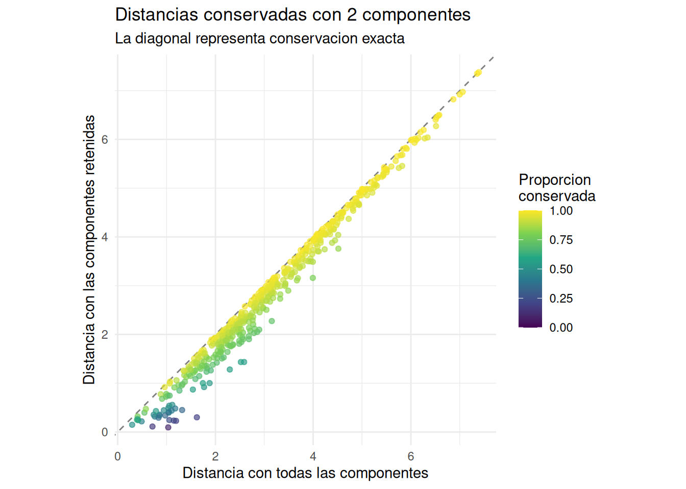
distancias_2$resumen |>
mutate(across(where(is.numeric), ~ round(.x, 3))) |>
kable(caption = "Conservación de distancias con dos componentes")| componentes | correlacion_distancias | conservacion_media | peor_conservacion |
|---|---|---|---|
| 2 | 0.992 | 0.877 | 0.091 |
distancias_2$tabla |>
slice_min(proporcion_conservada, n = 5) |>
mutate(across(where(is.numeric), ~ round(.x, 3))) |>
kable(caption = "Parejas cuyas distancias se representan peor")| individuo_1 | individuo_2 | distancia_completa | distancia_reducida | perdida_cuadrada | proporcion_conservada |
|---|---|---|---|---|---|
| Merc 450SE | Dodge Challenger | 1.034 | 0.094 | 1.061 | 0.091 |
| Merc 450SL | AMC Javelin | 0.711 | 0.112 | 0.494 | 0.158 |
| Porsche 914-2 | Lotus Europa | 1.620 | 0.301 | 2.534 | 0.186 |
| Dodge Challenger | Pontiac Firebird | 1.194 | 0.228 | 1.374 | 0.191 |
| Merc 450SE | Pontiac Firebird | 1.148 | 0.234 | 1.262 | 0.204 |
Esta distinción importa especialmente si después aplicamos clustering: agrupar sobre todas las componentes reproduce las distancias euclídeas de los datos preparados, mientras que agrupar sobre \(q\) componentes introduce una aproximación deliberada.
PCA no conoce una variable respuesta ni nuestra pregunta científica. En el siguiente ejemplo, la mayor variabilidad está en la diagonal \(x=y\), pero los grupos externos se distinguen en la dirección perpendicular, de mucha menor varianza.
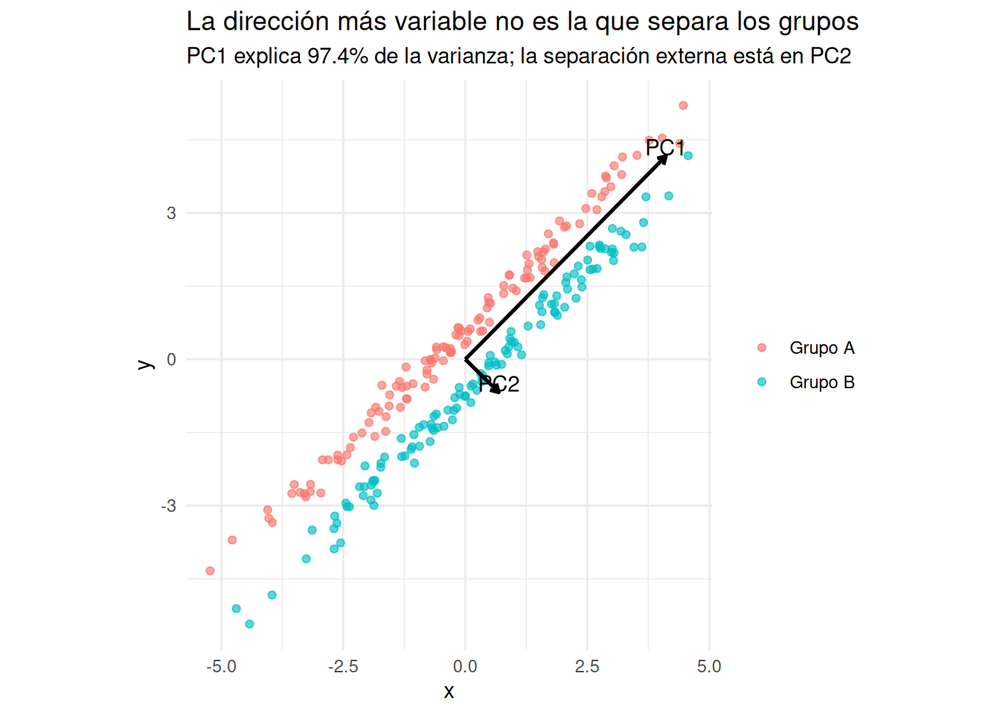
Una dirección de baja varianza puede ser predictiva o científicamente decisiva. PCA preserva estructura geométrica dominante, no relevancia supervisada.
PCA puede reducir ruido y colinealidad antes de clustering o clasificación. Por ejemplo, podemos agrupar los coches a partir de sus dos primeros scores:
set.seed(123)
cl_pca <- kmeans(pca_mtcars$x[, 1:2], centers = 3, nstart = 25)
kable(table(
cluster = cl_pca$cluster,
transmision = factor(mtcars$am, labels = c("automático", "manual"))
))| automático | manual |
|---|---|
| 0 | 6 |
| 12 | 2 |
| 7 | 5 |
Las componentes de mayor varianza no tienen por qué separar mejor una etiqueta externa como am.
Si PCA forma parte de un procedimiento predictivo, hay que evitar fuga de información:
Aunque PCA no usa la respuesta, sí aprende la distribución de las covariables. Calcularlo sobre todo el conjunto antes de validar puede producir leakage.
Que una componente explique mucha varianza no implica que sea causal, estable ni sustantivamente importante.
rotation con correlaciones variable–componente.rotation^2; eso da contribuciones, no cos².Un análisis no termina al producir un biplot. Una secuencia razonable es:
La elección de \(q\) puede ser distinta para dos tareas. Dos componentes pueden bastar para comunicar una figura y ser insuficientes para hacer clustering o predecir.
PCA proyecta una nube sobre ejes ortogonales que ordenan su variabilidad. Maximizar la varianza proyectada equivale a minimizar el error de reconstrucción, y la optimización conduce a los autovectores de la matriz de covarianzas o correlaciones. Los autovalores son las varianzas de los nuevos ejes; SVD permite obtenerlos directamente desde la matriz de datos.
Para interpretar el resultado hay que distinguir coeficientes, scores, coordenadas de variables, cos² y contribuciones. La rotación completa conserva las distancias euclídeas; retener \(q\) componentes significa proyectar sobre un subespacio y aceptar pérdida de reconstrucción y de distancias. Variables e individuos suplementarios permiten contrastar la solución sin modificarla. La compresión puede ser útil, pero la máxima varianza no garantiza relevancia externa ni estabilidad de cada eje.
mtcars con escalado e interpreta PC1 y PC2 usando coeficientes, contribuciones y círculo de correlaciones.mtcars con y sin escalado. Explica qué geometría responde a cada análisis.var(pca$x[, k]) coincide con pca$sdev[k]^2.sweep(rotation, 2, sdev, "*").mtcars con uno, dos y tres componentes y compara los errores con la suma de autovalores descartados.predict(). Explica por qué no debe volver a estimarse el PCA.| Función | Para qué se usa | Uso básico |
|---|---|---|
prcomp() |
Ajustar el PCA. El escalado es una decisión del análisis. | prcomp(datos, center = TRUE, scale. = TRUE) |
predict() |
Proyectar individuos nuevos usando el centro, la escala y los ejes ya estimados. | predict(pca, newdata = nuevos) |
eigen() |
Obtener autovalores y autovectores de una matriz simétrica. | eigen(cov(datos)) |
visualizar_direcciones_2d() |
Dibujar direcciones sobre datos con dos variables. | visualizar_direcciones_2d(datos, direcciones) |
preparar_proyeccion() |
Calcular scores, puntos proyectados y error para una dirección bidimensional. | preparar_proyeccion(datos, direccion, nombre) |
resumir_varianza_pca() |
Obtener autovalores, varianza explicada, umbrales, Kaiser y gráficos. | resultado <- resumir_varianza_pca(pca) |
resumir_variables_pca() |
Reunir coeficientes, correlaciones, cos² y contribuciones de las variables. | resumir_variables_pca(pca, datos) |
circulo_correlaciones_pca() |
Representar las variables en dos componentes. | circulo_correlaciones_pca(pca, datos, c(1, 2)) |
resumir_individuos_pca() |
Obtener scores, distancias y cos² de los individuos. | resumir_individuos_pca(pca, c(1, 2)) |
visualizar_individuos_pca() |
Dibujar el mapa de individuos, opcionalmente por grupos o cos². | visualizar_individuos_pca(pca, c(1, 2)) |
analisis_paralelo_pca() |
Comparar los autovalores observados con una referencia aleatoria. | analisis_paralelo_pca(datos) |
reconstruir_pca() |
Reconstruir los datos conservando las primeras q componentes. |
reconstruir_pca(pca, q = 2) |
evaluar_reconstruccion_pca() |
Comparar error empírico, error teórico y varianza descartada. | evaluar_reconstruccion_pca(pca, datos) |
diagnosticar_reconstruccion_pca() |
Localizar la pérdida por variables e individuos. | diagnosticar_reconstruccion_pca(pca, datos, q = 2) |
evaluar_distancias_pca() |
Comprobar qué distancias se conservan al retener q componentes. |
evaluar_distancias_pca(pca, q = 2) |
resumir_variables_suplementarias_pca() |
Relacionar variables cuantitativas externas con las componentes. | resumir_variables_suplementarias_pca(pca, variables) |